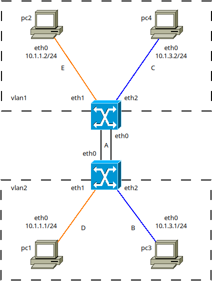
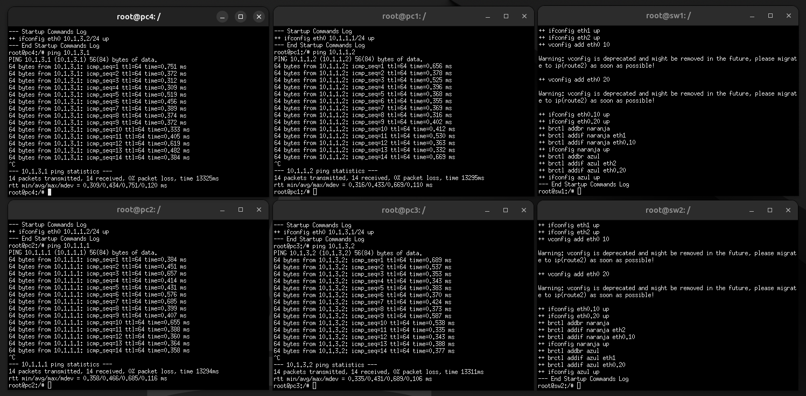
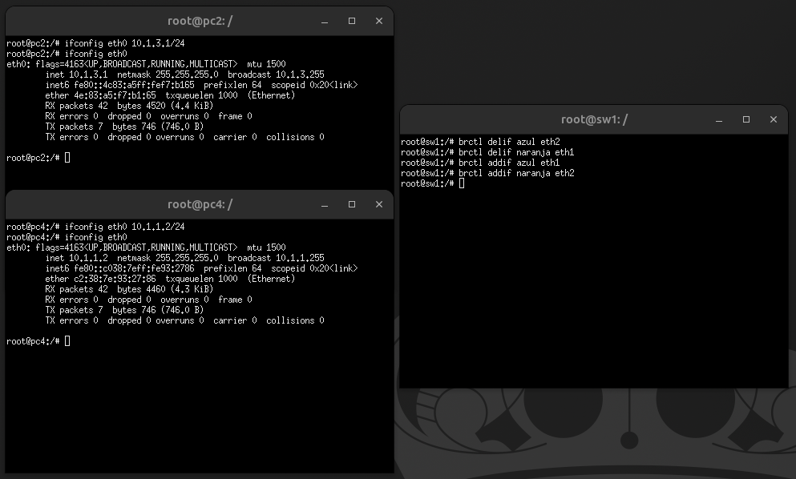
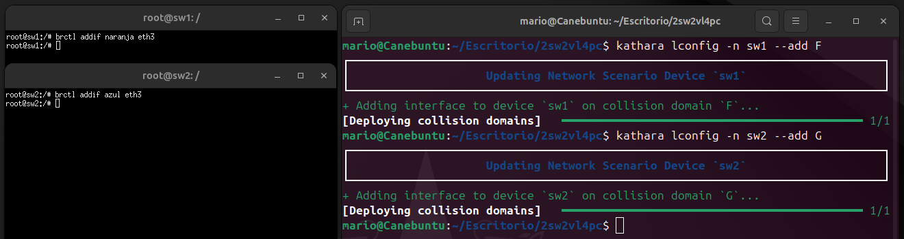
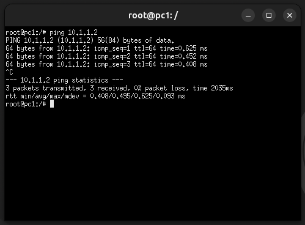
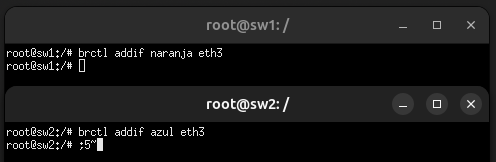
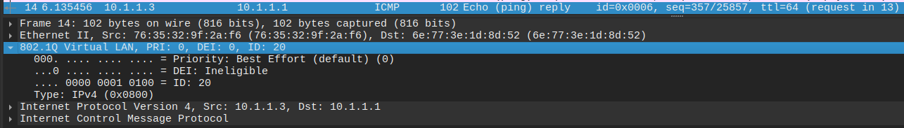
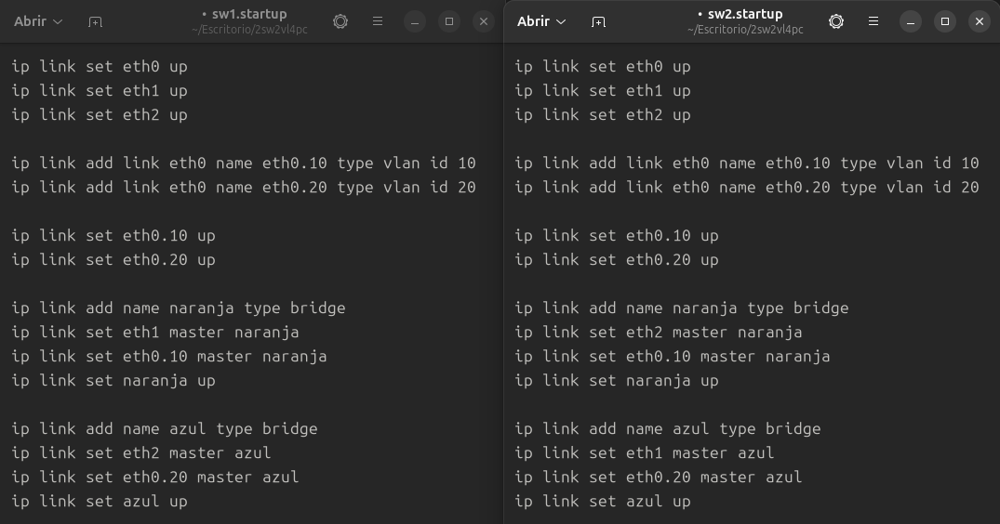
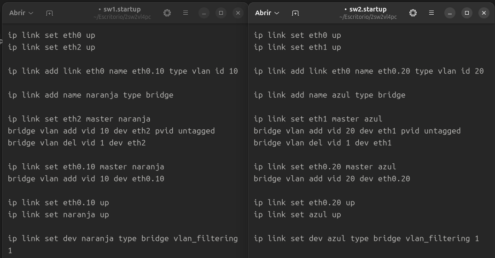

Mario Valiño Canalejas 07/05/2025
Memoria Kathará #2
- ¿Qué hosts pertenecen a cada VLAN? Haz capturas que lo demuestren.


- Intercambia dos PC entre una VLAN y la otra sin detener la simulación.
Simplemente, con el laboratorio activo, debemos modificar la configuración de red de los nodos pc2 y pc4 (para mi ejemplo) y modificar el switch. Dejo las capturas a continuación.

- Añade un PC más a cada una de las VLAN.

- ¿Ve el nuevo PC de la VLAN a los antiguos sin problemas? Demuéstralo con una captura.

- Si no, ¿qué errores o síntomas lo atestiguan? ¿Están en la misma red IP? ¿Se solapan o se podrían solapar las configuraciones de red de los nodos? ¿Qué necesitamos hacer para que se vean?
Si recibimos un error al hacer ping a un PC antiguo indicaría que el destino es inaccesible porque está en una red diferente. No comparten el mismo rango de direcciones IP. Para que puedan comunicarse de nuevo debemos retirar la interfaz eth1 de br1 y volver a añadirla a br0, o alternativamente reiniciar todo el laboratorio.
- ¿Qué necesitamos para que se vean entre las VLAN?

- ¿En qué interfaz hay que escuchar para capturar los cabeceras 802.1Q? ¿Por qué? Haz una captura que lo demuestre.
Aquellas interfaces físicas conectadas a eth0.

- Sustitución del comando vconfig por el comando iproute equivalente.

- Creación y configuración de las vlan usando vlan_filter.
